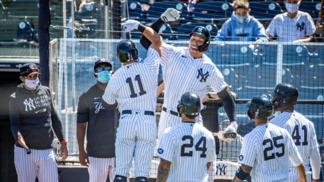

Nueva York es una ciudad vibrante y dinámica, conocida por su energía inagotable y su diversidad cultural. Es un lugar donde personas de todo el mundo convergen, creando una mezcla única de idiomas, tradiciones y estilos de vida. Su atmósfera está marcada por la innovación, la creatividad y el ritmo acelerado que la define como un símbolo global de modernidad y oportunidad.
Lugares emblemáticos
 Nueva York es un destino lleno de lugares fascinantes para explorar. Desde sus espacios verdes y tranquilos hasta su arquitectura imponente, cada rincón de la ciudad ofrece algo único. Puedes perderte en la magia de un enorme parque urbano en el corazón de la ciudad, disfrutar de impresionantes vistas desde rascacielos que dominan el horizonte, o pasear por calles llenas de luces y energía que nunca se apagan. Es también una cuna de arte y cultura, con museos que albergan tesoros de todas las épocas, y escenarios teatrales donde la creatividad brilla a diario. Además, cada barrio tiene su propio encanto, ofreciendo una experiencia diversa y multicultural en cada visita. Mas información
Nueva York es un destino lleno de lugares fascinantes para explorar. Desde sus espacios verdes y tranquilos hasta su arquitectura imponente, cada rincón de la ciudad ofrece algo único. Puedes perderte en la magia de un enorme parque urbano en el corazón de la ciudad, disfrutar de impresionantes vistas desde rascacielos que dominan el horizonte, o pasear por calles llenas de luces y energía que nunca se apagan. Es también una cuna de arte y cultura, con museos que albergan tesoros de todas las épocas, y escenarios teatrales donde la creatividad brilla a diario. Además, cada barrio tiene su propio encanto, ofreciendo una experiencia diversa y multicultural en cada visita. Mas información
Deportes mas practicados en New York
 En Nueva York, los deportes más practicados son el fútbol americano, el béisbol (con los Yankees y los Mets), el baloncesto (con los Knicks y Nets), el fútbol, el hockey sobre hielo, el running (destacando el Maratón de Nueva York), el tenis (con el US Open) y el ciclismo. También es popular el voleibol, especialmente en las playas y parques de la ciudad. Mas informaciónGastronomía de New York
 La gastronomía de Nueva York es muy diversa, reflejando su multiculturalidad. Algunos platos emblemáticos son la pizza al estilo neoyorquino, los bagels con queso crema y salmón, los hot dogs, el cheesecake, los pretzels y la comida china, especialmente los dumplings en Chinatown. También son populares los platos latinos como tacos y empanadas, la comida judía como el pastrami on rye, y los platos japoneses como el ramen y sushi. Además, los camiones de comida ofrecen una gran variedad de opciones internacionales. Mas información
La gastronomía de Nueva York es muy diversa, reflejando su multiculturalidad. Algunos platos emblemáticos son la pizza al estilo neoyorquino, los bagels con queso crema y salmón, los hot dogs, el cheesecake, los pretzels y la comida china, especialmente los dumplings en Chinatown. También son populares los platos latinos como tacos y empanadas, la comida judía como el pastrami on rye, y los platos japoneses como el ramen y sushi. Además, los camiones de comida ofrecen una gran variedad de opciones internacionales. Mas información